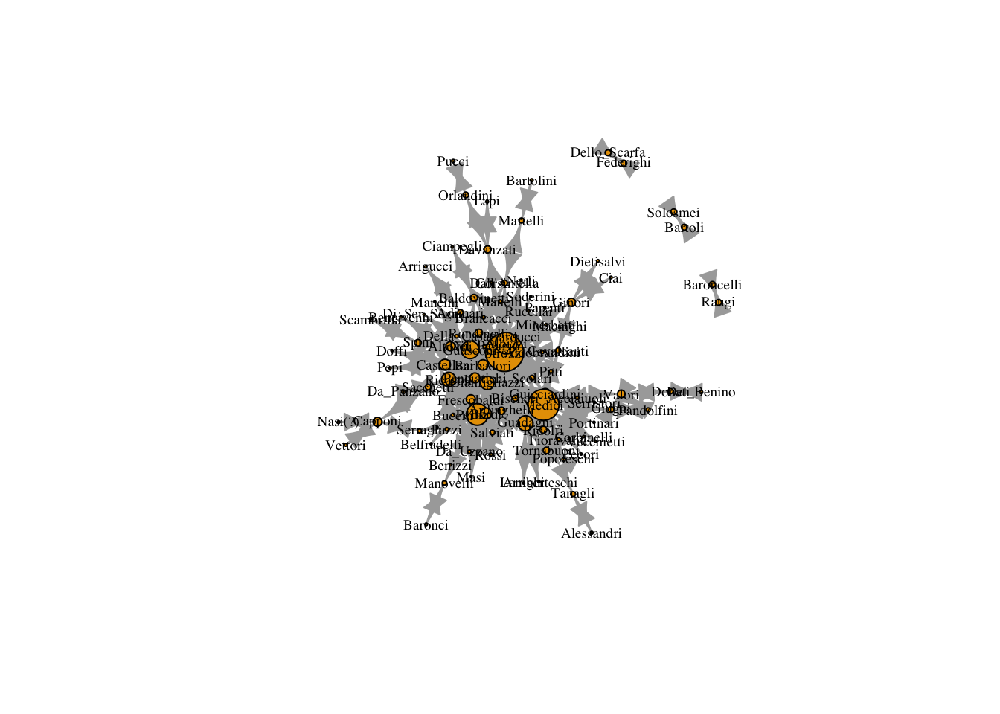

13 Distance weighted reach
distance_weighted_reach=function(x){
distances=shortest.paths(x) #create matrix of geodesic distances
diag(distances)=1 # replace the diagonal with 1s
weights=1/distances # take the reciprocal of distances
return(apply(weights,1,sum)) # sum for each node (row)
}
dw_reach = distance_weighted_reach(marriageNet)
dw_reach = dw_reach/max(dw_reach)
plot(marriageNet, vertex.size = dw_reach * 10, vertex.label.cex = .4, vertex.label.color = "black", vertex.color = "tomato")